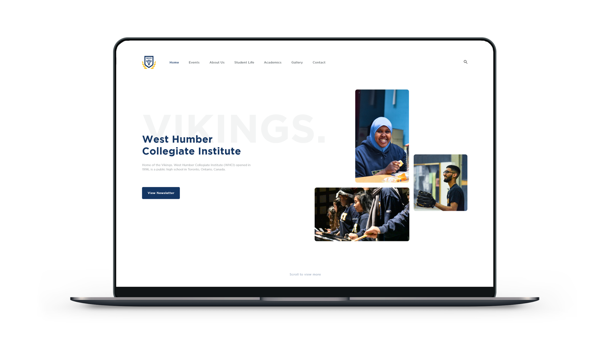
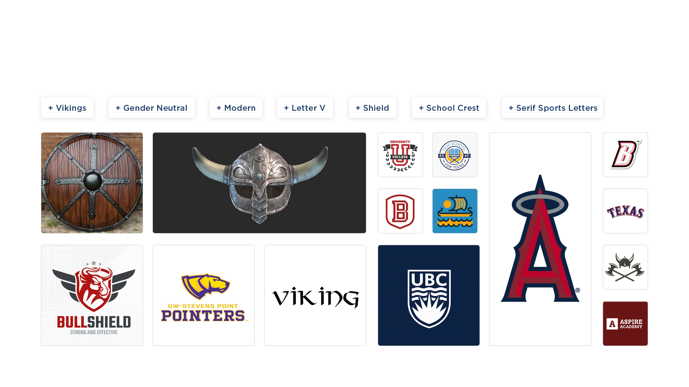
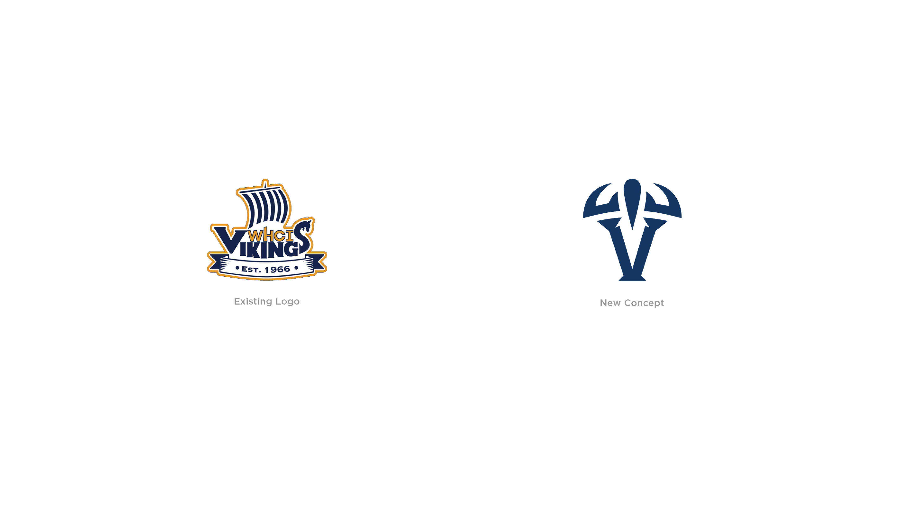
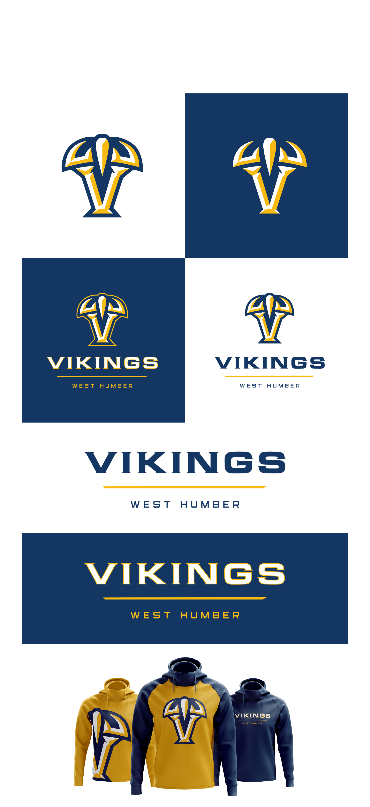
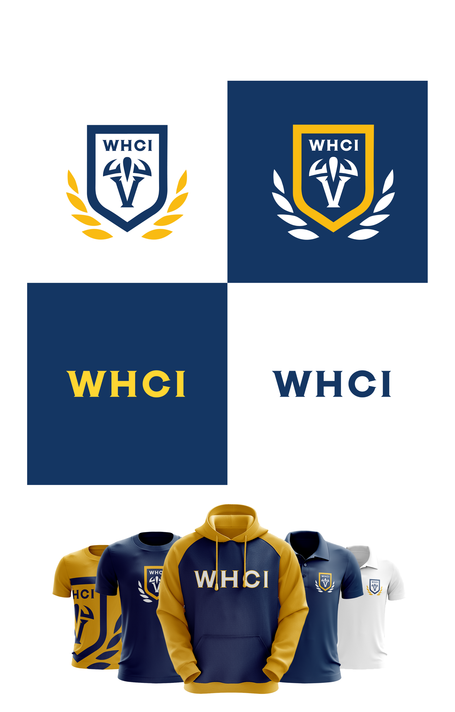
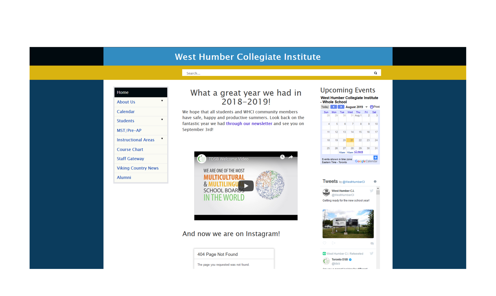

West Humber C.I. — Redesigning their brand and website
West Humber Collegiate Institute (WHCI) is a public high school in Toronto, Ontario. I graduated from highschool in June 2019 so I decided to rebrand them to solve some issues they were having.
Role — Logo & Product Desiginer, Induvidual Project
Tools — Adobe Photoshop, Adobe Illustrator, Adobe XD
Timeline — 6 weeks
Branding Problem
Versatility is an on going issue with their current logo. One of the main conflicts was that the logo dosen’t work well with the school athletics department as it lacks the boldness and sharpness that sports logos have, causing some teams to create their own version, weakening the brand identity as a whole.
Moodboard
The first step in the logo design process, I started researching on what elements did I want the logo to have.
Branding Solution
The Main Logo
The first concept is focused on being the primary school logo that will be used for proffessional documents, graphics for school events, business cars, uniform, etc. The idea was to have the logo in a school crest style, with the focus of making it as appealing as possible by using minimalism and modernism for a bold look.
WHCI Athletics Logo
There's more!
Along with the brand redesign, I decided to also recreate the school’s website. Although, the website redesign does not follow the certain rules and restrictions the school board has for their websites, it is a much more modern approach to the current website they have. With the boards restrictions, it is difficult to come up with something appealing.
Problem
The problem with their current website was that all their information was crammed resulting in the user to get confused due to the lack of organization. Which is why I decided to go for a simple approach by condensing the information to make sure everything fits on one page having all the neccessary information that a regular school website would have.
With the help of user testing and conducting many surveys, the main things I found out from the students is that they never look at the website, it’s ugly, and that it’s useless. This is how I fixed it.
Glimpse of current website
Redesigned Website

Behance Project
View Behance Project for more mockups and versions
Reflection & Next Steps
Studying at West Humber C.I. and graduating from there allowed me to really understand them as a school, and what are it’s values and beliefs. Although this rebranding was not official, and was just for fun, it allowed me to dive deeper into branding and also expand my product design skills.
Some key takeaways from this project from the branding side was to make sure the logo resonates with the school itself. It was difficult at first to make something better than their exisiting logo but it allowed me to realize the importance of moodboards and the logo design process in order to work towards something better.
This was also one of my first product design projects and despite me not giving a deeper analysis on the process of the website creation, I was able to learn a few new methods in order to ensure that the user’s needs are met.
Feedback
I decided to present my rebranding to the school and explain my reasoning for the rebrand. Unfortunately, it was decided not to use the logo for a few reasons; one being it could be mistaken as a bull when it was made originally as the letter V with a helment.
The next steps for the logo would be to restart the logo process and think about what can make it stand out from other schools but also relate to a viking. I want to also work on the website more and try to create something that could match the board’s requirements.